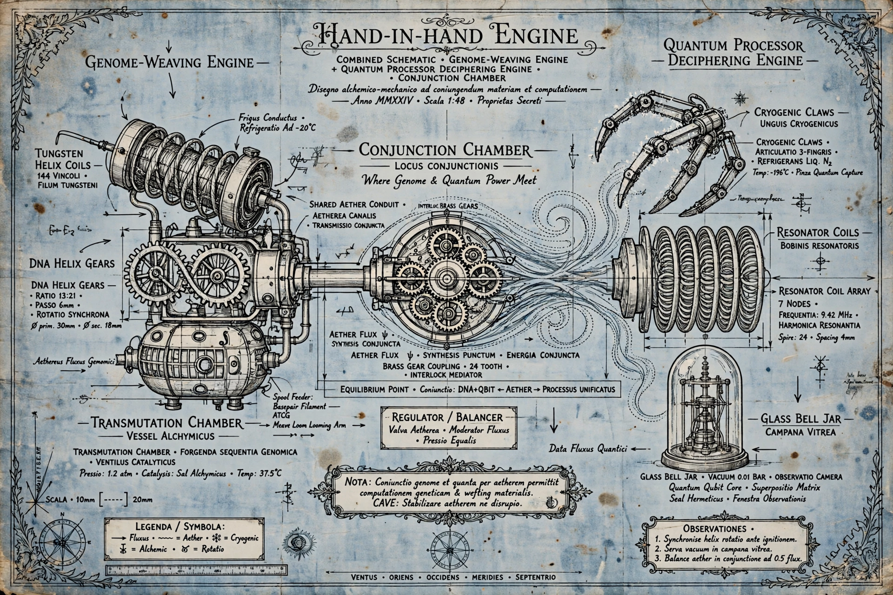

The Hand-in-Hand Engine
Combined schematic: the Genome-Weaving Engine, the Quantum Processor Deciphering Engine, and the Conjunction Chamber where genome and quantum power meet. Anno MMXXIV.

The Quantum Decipher Engine
Alchemical Schematic No. QDE-VII: for the disassembly and deciphering of the quantum processor chip. Six operating steps, Draft II, Anno 1899.